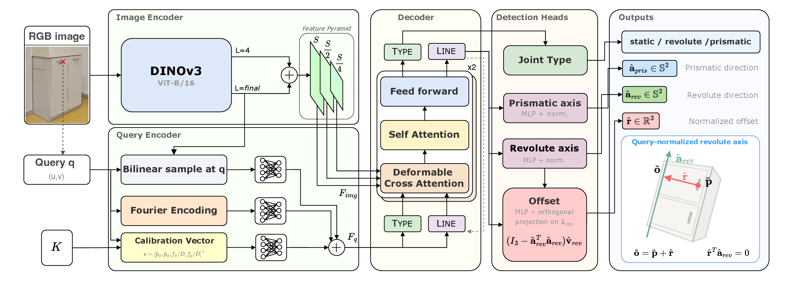
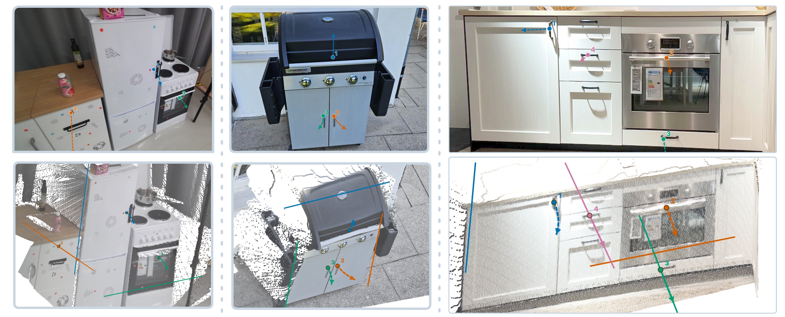
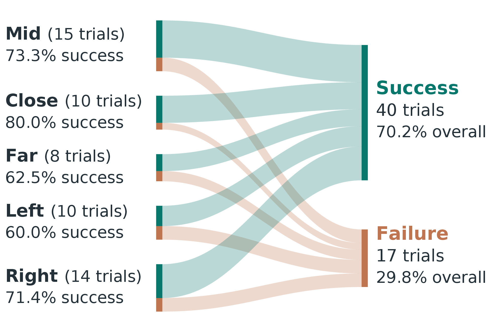

QueryArt: Query-Conditioned Articulation Estimation from a Single Image
Abstract
Enabling robots to estimate the kinematic parameters of articulated objects unlocks a wide range of capabilities for interaction and manipulation. The estimation has to happen from the information the robot currently observes, often just a single RGB image of an object it has never seen before. Current single-image approaches couple articulation part segmentation with articulation estimation, making their predictions vulnerable to missed detections and incorrect part associations, and they regress metric 3D geometry that a single view fixes only up to scale. We present QueryArt, a model that estimates articulation parameters from a single RGB image, a 2D query point, and camera intrinsics. QueryArt is trained to estimate the 3D articulation geometry relative to the queried point and in units of its depth, which keeps its target identifiable from the image alone. A single depth measurement at the query point then supplies the scale and recovers the metric parameters. We train QueryArt on a curated mixture of synthetic and real-world articulation datasets. We evaluate QueryArt on several benchmarks and compare it against recent baselines. QueryArt outperforms recent baselines on most articulation metrics, including on out-of-distribution data. To demonstrate the model's capabilities in real-world settings, we evaluate QueryArt on a mobile manipulator across 57 manipulation trials spanning 16 object parts and five viewpoint classes, achieving a 70.2% success rate.
Method

A frozen vision transformer (DINOv3 ViT-B/16) encodes the RGB image; early and final-block features are fused into a three-scale feature pyramid. The query embedding is built from the point-wise visual features sampled at the query, a Fourier encoding of the pixel location, and a calibration vector derived from the camera intrinsics. It is added to two learned tokens, Type and Line, which pass through two transformer blocks that cross-attend to the image features and self-attend to each other. The prediction heads output the joint type and the axis parameters for both joint types. Right: the predicted geometry in query-normalized coordinates. Expressing the offset to the revolute axis in units of the query depth makes the axis recoverable up to a single global scale factor.
Qualitative Results

Qualitative articulation predictions on objects unseen during training: Arti4D (left), self-captured scenes (middle), HOI! (right). Each scene is queried at several points. Top: input image with the query points and the projected motion trajectory. Bottom: the same predictions on the point cloud, with the predicted axis of motion and the 3D trajectory.
Real-Robot Experiments
We deploy QueryArt on a mobile manipulator across 57 manipulation trials spanning 16 object parts and five viewpoint classes, achieving a 70.2% success rate.

Real-robot trials by viewpoint. Each trial is assigned to one of five viewpoint classes and flows to a success or a failure outcome.
BibTeX
@article{werby2026queryart,
title={Query-Conditioned Articulation Estimation from a Single Image},
author={Werby, Abdelrhman and Scaparro, Fabio and Arras, Kai O.},
journal={arXiv preprint},
year={2026}
}